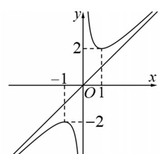
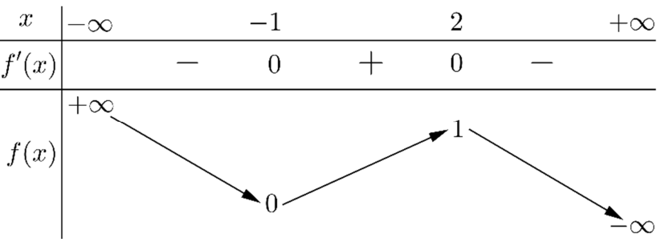
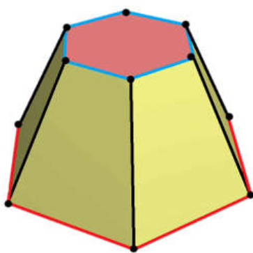

ĐỀ THI TOÁN - ĐỀ SỐ 16 HOT
Phần I: Trắc Nghiệm Nhiều Lựa Chọn
Tóm tắt kiến thức: Điểm cực trị của hàm số
Điểm cực trị của hàm số \( f(x) \) là điểm mà tại đó \( f'(x) = 0 \) hoặc \( f'(x) \) không xác định, và dấu của \( f'(x) \) thay đổi qua điểm đó. Điểm cực đại có \( f'(x) \) đổi từ dương sang âm.
Câu 1:
Cho hàm số \( f(x) \) có đồ thị như hình vẽ bên:

Điểm cực đại của hàm số đã cho là:
Chọn đáp án:
Lời giải:
Từ đồ thị, điểm cực đại là điểm mà hàm số đạt giá trị lớn nhất và \( f'(x) \) đổi từ dương sang âm. Quan sát đồ thị, điểm \( x = -1 \) thỏa mãn.
Đáp án: A.
Tóm tắt kiến thức: Giá trị lớn nhất/nhỏ nhất của hàm số
Giá trị nhỏ nhất của hàm số trên đoạn \([a; b]\) là giá trị nhỏ nhất trong các giá trị tại điểm cực trị và tại \( x = a \), \( x = b \).
Câu 2:
Cho hàm số \( f(x) \) có đồ thị như hình vẽ bên:

Giá trị nhỏ nhất của hàm số \( f(x) \) trên đoạn \([-2; 2]\) bằng:
Chọn đáp án:
Lời giải:
Từ đồ thị, giá trị nhỏ nhất của \( f(x) \) trên \([-2; 2]\) là giá trị tại điểm thấp nhất, tức là y=0.
Đáp án: A.
Tóm tắt kiến thức: Tiệm cận đứng của hàm số
Hàm số \( y = \frac{ax + b}{cx + d} \) có tiệm cận đứng tại \( x = -\frac{d}{c} \) khi mẫu số bằng 0.
Câu 3:
Tìm \( a \) để đồ thị hàm số \( y = \frac{4x - 1}{ax + 2} \) có tiệm cận đứng là đường thẳng \( x = -2 \):
Chọn đáp án:
Lời giải:
Tiệm cận đứng xảy ra khi mẫu số \( ax + 2 = 0 \). Với \( x = -2 \), ta có \( a(-2) + 2 = 0 \Rightarrow -2a + 2 = 0 \Rightarrow a = 1 \). .
Đáp án: A.
Tóm tắt kiến thức: Xác suất
Xác suất chọn \( k \) phần tử từ \( n \) phần tử: \( P = \frac{C_k^m}{C_k^n} \), với \( C_k^n = \frac{n!}{k!(n-k)!} \).
Câu 4:
Một lớp học có 40 học sinh gồm 25 nữ và 15 nam. Chọn ngẫu nhiên 3 học sinh. Tính xác suất để 3 học sinh được chọn đều là nam:
Chọn đáp án:
Tóm tắt kiến thức: Nguyên hàm
Nguyên hàm của \( f(x) \) là \( F(x) \) sao cho \( F'(x) = f(x) \). Nguyên hàm của \( ax^n \) là \( \frac{a}{n+1}x^{n+1} \), của \( \sin x \) là \( -\cos x \).
Câu 5:
Hàm số \( f(x) = 3x^2 - \sin x \) có một nguyên hàm là:
Chọn đáp án:
Lời giải:
Nguyên hàm của \( 3x^2 \) là \( x^3 \), của \( -\sin x \) là \( -\cos x \). Do đó, nguyên hàm của \( f(x) = 3x^2 - \sin x \) là \( x^3 - \cos x + C \). Đáp án A là một nguyên hàm.
Đáp án: A.
Tóm tắt kiến thức: Nguyên hàm của hàm e mũ
Nguyên hàm của \( a e^{kx} \) là \( \frac{a}{k} e^{kx} + C \).
Câu 6:
Họ nguyên hàm của hàm số \( f(x) = 8 e^{4x - 2025} \) tương ứng là:
Chọn đáp án:
Lời giải:
Nguyên hàm của \( 8 e^{4x - 2025} \) là \( \int 8 e^{4x - 2025} dx = 8 \cdot \frac{1}{4} e^{4x - 2025} + C = 2 e^{4x - 2025} + C \).
Đáp án: A.
Tóm tắt kiến thức: Tích phân
Tích phân \( \int_a^b [kf(x) + c] dx = k \int_a^b f(x) dx + c(b - a) \).
Câu 7:
Cho \( \int_0^1 f(x) dx = 3 \). Tính tích phân \( I = \int_0^2 [3 f(x) + 1] dx \):
Chọn đáp án:
Lời giải:
Ta có: \( I = \int_0^2 [3 f(x) + 1] dx = 3 \int_0^2 f(x) dx + \int_0^2 1 dx \).
Tóm tắt kiến thức: Cấp số cộng
Tổng của cấp số cộng: \( S_n = \frac{n}{2} (a_1 + a_n) \), với \( a_n = a_1 + (n-1)d \).
Câu 8:
Một người muốn mua một thanh gỗ đủ để tàm các thanh ngang của một cái thang. Biết rằng chiều dài các thanh ngang của cái thang đó (từ bậc dưới cùng đến trên cùng) lần lượt là \( 45 \, \text{cm}, 43 \, \text{cm}, 41 \, \text{cm}, \ldots, 31 \, \text{cm} \). (xem hình vẽ bên:
 )
)
Giả sử chiều dài các mối nối là không đáng kể, chiều dài thanh gỗ mà người đó cần mua gần nhất với giá trị nào sau đây?
Chọn đáp án:
Lời giải:
Dãy số \( 45, 43, 41, \ldots, 31 \) là cấp số cộng với \( a_1 = 45 \), công sai \( d = -2 \). Số hạng \( a_n = 31 \), ta có \( 31 = 45 + (n-1)(-2) \Rightarrow n = 8 \).
Tổng chiều dài: \( S_8 = \frac{8}{2} (45 + 31) = 4 \cdot 76 = 304 \, \text{cm} = 3,04 \, \text{m} \). Giá trị gần nhất là \( 3,1 \, \text{m} \).
Đáp án: D.
Tóm tắt kiến thức: Vector trong không gian
Tọa độ vector \( \overrightarrow{AB} = (x_B - x_A, y_B - y_A, z_B - z_A) \).
Câu 9:
Trong không gian \( Oxyz \), cho hai điểm \( A(2; -2; 1) \) và \( B(1; -1; 3) \). Tìm tọa độ vector \( \overrightarrow{AB} \):
Chọn đáp án:
Lời giải:
\( \overrightarrow{AB} = (1 - 2; -1 - (-2); 3 - 1) = (-1; 1; 2) \).
Đáp án: A.
Tóm tắt kiến thức: Vector chỉ phương của đường thẳng
Vector chỉ phương của đường thẳng \( \frac{x - x_0}{a} = \frac{y - y_0}{b} = \frac{z - z_0}{c} \) là \( (a; b; c) \).
Câu 10:
Trong không gian \( Oxyz \), cho đường thẳng \( d: \frac{x - 2}{-1} = \frac{y - 1}{2} = \frac{z + 3}{1} \). Vector nào dưới đây là một vector chỉ phương của \( d \)?
Chọn đáp án:
Lời giải:
Vector chỉ phương của \( d \) là \( (-1; 2; 1) \).
Đáp án: C.
Tóm tắt kiến thức: Mặt cầu
Mặt cầu \( x^2 + y^2 + z^2 + 2ax + 2by + 2cz + d = 0 \) có bán kính \( R = \sqrt{a^2 + b^2 + c^2 - d} \).
Câu 11:
Trong không gian \( Oxyz \), mặt cầu \( (S): x^2 + y^2 + z^2 - 2x - 4y + 6z + 10 = 0 \) có bán kính \( R \) bằng:
Chọn đáp án:
Lời giải:
Phương trình mặt cầu: \( x^2 + y^2 + z^2 - 2x - 4y + 6z + 10 = 0 \).
Bán kính: \( R = \sqrt{4} = 2 \).
Đáp án: D.
Tóm tắt kiến thức: Khoảng biến thiên
Khoảng biến thiên của mẫu số liệu ghép nhóm: \( R = x_{\text{max}} - x_{\text{min}} \), với \( x_{\text{max}}, x_{\text{min}} \) là giá trị trung bình của nhóm lớn nhất và nhỏ nhất.
Câu 12:
Thống kê số thẻ vàng của mỗi câu lạc bộ trong giải Ngoại hạng Anh mùa giải 2021-2022 cho kết quả như sau:
| 101 | 79 | 79 | 78 | 75 | 73 | 68 | 67 | 67 | 63 |
| 63 | 61 | 60 | 59 | 57 | 55 | 55 | 50 | 47 | 42 |
Chọn đáp án:
Lời giải:
Các nhóm: \([40; 50), [50; 60), [60; 70), [70; 80), [80; 90), [90; 100), [100; 110)\).
Phần II: Trắc Nghiệm Đúng/Sai
Tóm tắt kiến thức: Hàm số và bảng biến thiên
Bảng biến thiên cho biết dấu của \( f'(x) \), từ đó xác định điểm cực trị, khoảng đồng biến/nghịch biến, và các tính chất khác của hàm số.
Câu 13:
Cho hàm số \( y = f(x) \) xác định trên \( \mathbb{R} \) và có bảng biến thiên như sau:

Xét các phát biểu sau:
Chọn đáp án cho từng phát biểu:
a)
b)
c)
d)
Lời giải:
a) Đúng. Bảng biến thiên cho thấy \( f'(x) \) đổi dấu tại \( x = -1 \) và \( x = 2 \), nên có 2 điểm cực trị.
b) Sai. \( \lim_{x \to -\infty} f(x) = +\infty \), nên hàm số không có giá trị lớn nhất.
c) Đúng. \( g'(x) = 2 f'(2x - 2) \). \( g(x) \) đồng biến khi \( f'(2x - 2) > 0 \), tức \( -1 < 2x - 2 < 2 \Rightarrow 1 < x < 2 \).
d) Sai. Phương trình \( 2f(x) + 2024 - m = 0 \Rightarrow f(x) = \frac{m - 2024}{2} \). Có 3 nghiệm khi \( 0 < \frac{m - 2024}{2} < 1 \Rightarrow 2024 < m < 2026 \). Chỉ có \( m = 2025 \), tức 1 giá trị.
Đáp án: a) Đúng, b) Sai, c) Đúng, d) Sai.
Tóm tắt kiến thức: Xác suất có điều kiện
Xác suất có điều kiện: \( P(B|A) = \frac{P(A \cap B)}{P(A)} \). Công thức xác suất đầy đủ: \( P(B) = P(A)P(B|A) + P(\bar{A})P(B|\bar{A}) \).
Câu 14:
Một hộp chứa 50 quả bưởi, trong đó 70% là bưởi Phúc Trạch, số còn lại không phải bưởi Phúc Trạch. Bà Lan lấy ra một quả, sau đó bà Thanh lấy ra một quả thứ hai. Gọi \( A \): "Quả bưởi bà Lan lấy là bưởi Phúc Trạch"; \( B \): "Quả bưởi bà Thanh lấy là bưởi Phúc Trạch". Xét các phát biểu:
Chọn đáp án cho từng phát biểu:
a)
b)
c)
d)
Lời giải:
a) Đúng. Số bưởi Phúc Trạch: \( 50 \times 0.7 = 35 \).
b) Đúng. \( P(A) = \frac{35}{50} = \frac{7}{10} \).
c) Sai. Sau khi bà Lan lấy 1 quả Phúc Trạch, còn 49 quả, trong đó 34 quả Phúc Trạch. \( P(B|A) = \frac{34}{49} \).
d) Đúng. \( P(B) = P(A)P(B|A) + P(\bar{A})P(B|\bar{A}) = \frac{7}{10} \cdot \frac{34}{49} + \frac{3}{10} \cdot \frac{35}{49} = \frac{7}{10} \).
Đáp án: a) Đúng, b) Đúng, c) Sai, d) Đúng.
Tóm tắt kiến thức: Chuyển động gia tốc
Gia tốc \( a(t) \), vận tốc \( v(t) = \int a(t) dt + C \), quãng đường \( s(t) = \int v(t) dt \).
Câu 15:
Một chất điểm đang chuyển động với vận tốc \( v_0 = 15 \, \text{m/s} \) thì tăng tốc với gia tốc \( a(t) = t^2 + 4t \, \text{m/s}^2 \). Xét các phát biểu:
Chọn đáp án cho từng phát biểu:
a)
b)
c)
d)
Lời giải:
a) Sai. \( a(1) = 1^2 + 4 \cdot 1 = 5 \, \text{m/s}^2 \).
b) Sai. \( v(t) = \int (t^2 + 4t) dt = \frac{t^3}{3} + 2t^2 + C \), với \( v(0) = 15 \Rightarrow C = 15 \). Vậy \( v(t) = \frac{t^3}{3} + 2t^2 + 15 \).
c) Đúng. \( v(3) = \frac{3^3}{3} + 2 \cdot 3^2 + 15 = 9 + 18 + 15 = 42 \, \text{m/s} \).
d) Đúng. Quãng đường: \( s = \int_0^3 \left( \frac{t^3}{3} + 2t^2 + 15 \right) dt = \left[ \frac{t^4}{12} + \frac{2t^3}{3} + 15t \right]_0^3 = 69,75 \, \text{m} \).
Đáp án: a) Sai, b) Sai, c) Đúng, d) Đúng.
Tóm tắt kiến thức: Hình học không gian
- Đường thẳng đi qua điểm \( A(x_0; y_0; z_0) \) có vector chỉ phương \( (a; b; c) \): \( \frac{x - x_0}{a} = \frac{y - y_0}{b} = \frac{z - z_0}{c} \).
- Mặt phẳng qua \( A \) và vuông góc với vector \( (a; b; c) \): \( a(x - x_0) + b(y - y_0) + c(z - z_0) = 0 \).
Câu 16:
Trong không gian \( Oxyz \), cho điểm \( A(2; -1; -2) \) và đường thẳng \( d: \frac{x - 1}{1} = \frac{y + 1}{-1} = \frac{z - 1}{1} \). Xét các phát biểu:
Chọn đáp án cho từng phát biểu:
a)
b)
c)
d)
Lời giải:
a) Sai. Thay \( B(0; 0; 1) \) vào phương trình \( d \): \( \frac{0 - 1}{1} = -1 \), \( \frac{0 + 1}{-1} = -1 \), \( \frac{1 - 1}{1} = 0 \). Không thỏa mãn.
b) Đúng. Vector chỉ phương của \( d \) là \( (1; -1; 1) \). \( (-1; 1; -1) = - (1; -1; 1) \), nên đúng.
c) Sai. Mặt phẳng \( (\alpha) \) vuông góc với \( d \), có vector pháp tuyến \( (1; -1; 1) \). Qua \( A(2; -1; -2) \): \( (x - 2) - (y + 1) + (z + 2) = 0 \Rightarrow x - y + z - 1 = 0 \).
d) Sai. Mặt phẳng \( (P) \): \( 5x - 2y - 7z - 26 = 0 \). Thay \( M(1; 2; 3) \): \( 5 \cdot 1 - 2 \cdot 2 - 7 \cdot 3 - 26 = -44 \neq 0 \), nên \( (P) \) không qua \( M \).
Đáp án: a) Sai, b) Đúng, c) Sai, d) Sai.
Phần III: Trắc Nghiệm Trả Lời Ngắn
Tóm tắt kiến thức: Tối ưu hóa
Tìm giá trị cực trị của hàm \( f(x) \): Lấy \( f'(x) = 0 \), kiểm tra \( f''(x) \) hoặc bảng biến thiên.
Câu 17:
Độ giảm huyết áp của một bệnh nhân được đo bởi công thức \( G(x) = 0,025 x^2 (30 - x) \), trong đó \( x \) (mg) là lượng thuốc cần tiêm. Để huyết áp giảm nhiều nhất thì cần tiêm cho bệnh nhân một liều lượng bằng bao nhiêu miligam?
Nhập đáp án:
Lời giải:
\( G(x) = 0,025 x^2 (30 - x) \). Đạo hàm: \( G'(x) = 0,025 (2x (30 - x) + x^2 (-1)) = 0,025 (60x - 3x^2) = \frac{3}{40} (20x - x^2) \).
\( G'(x) = 0 \Rightarrow x = 0 \) hoặc \( x = 20 \). Bảng biến thiên xác nhận cực đại tại \( x = 20 \).
Đáp án: 20.
Tóm tắt kiến thức: Lãi kép
Số tiền sau \( t \) năm với lãi kép: \( S = P (1 + r)^t \), với \( P \) là vốn ban đầu, \( r \) là lãi suất.
Câu 18:
Bác An gửi 100 triệu đồng vào ngân hàng theo hình thức lãi kép có kỳ hạn 12 tháng với lãi suất 6%/năm. Giả sử lãi suất không thay đổi và bác An không gửi thêm tiền. Hỏi sau ít nhất bao nhiêu năm thì số tiền bác An có được cả gốc và lãi nhiều hơn 150 triệu đồng (làm tròn đến hàng đơn vị)?
Nhập đáp án:
Lời giải:
Số tiền: \( S = 100 \cdot 1,06^t \). Cần \( 100 \cdot 1,06^t > 150 \Rightarrow 1,06^t > 1,5 \).
\( t > \log_{1,06} 1,5 \approx 6,96 \). Làm tròn, \( t = 7 \).
Đáp án: 7.
Tóm tắt kiến thức: Thể tích hình chóp cụt
Thể tích hình chóp cụt: \( V = \frac{h}{3} (S_1 + S_2 + \sqrt{S_1 S_2}) \), với \( S_1, S_2 \) là diện tích đáy, \( h \) là chiều cao.
Câu 19:
Cho một chậu nước hình chóp cụt đều (hình vẽ:
) có chiều cao bằng \( 3 \, \text{dm} \), đáy là lục giác đều, độ dài cạnh đáy lớn bằng \( 2 \, \text{dm} \), cạnh đáy nhỏ bằng \( 1 \, \text{dm} \). Thể tích của chậu nước đó bằng bao nhiêu đềximét khối? (làm tròn đến hàng phần chục)
Nhập đáp án:
Lời giải:
Diện tích đáy lớn: \( S_1 = 6 \cdot \frac{2^2 \sqrt{3}}{4} = 6\sqrt{3} \).
Diện tích đáy nhỏ: \( S_2 = 6 \cdot \frac{1^2 \sqrt{3}}{4} = \frac{3\sqrt{3}}{2} \).
Thể tích: \( V = \frac{3}{3} \left( 6\sqrt{3} + \frac{3\sqrt{3}}{2} + \sqrt{6\sqrt{3} \cdot \frac{3\sqrt{3}}{2}} \right) = \frac{21\sqrt{3}}{2} \approx 18,2 \, \text{dm}^3 \).
Đáp án: 18,2.
Tóm tắt kiến thức: Xác suất Bayes
Xác suất có điều kiện theo công thức Bayes: \( P(A|B) = \frac{P(A)P(B|A)}{P(A)P(B|A) + P(\bar{A})P(B|\bar{A})} \).
Câu 20:
Một bộ lọc được sử dụng để chặn thư rác trong các tài khoản thư điện tử. Tỷ lệ thư rác là 3%. Chọn ngẫu nhiên một thư bị chặn, xác suất để đó là thư rác bằng bao nhiêu? (làm tròn đến hàng phần trăm)
Nhập đáp án:
Lời giải:
Gọi \( A \): thư là thư rác; \( B \): thư bị chặn.
\( P(A) = 0,03 \), \( P(\bar{A}) = 0,97 \), \( P(B|A) = 0,95 \), \( P(B|\bar{A}) = 0,01 \).
\( P(A|B) = \frac{0,03 \cdot 0,95}{0,03 \cdot 0,95 + 0,97 \cdot 0,01} \approx 0,75 \).
Đáp án: 0,75.
Tóm tắt kiến thức: Giao điểm đường thẳng và mặt cầu
Thời gian di chuyển: \( t = \frac{\text{khoảng cách}}{\text{vận tốc}} \). Tìm giao điểm đường thẳng và mặt cầu để xác định đoạn đường trong vùng.
Câu 21:
Trong không gian với hệ tọa độ \( Oxyz \), đài kiểm soát không lưu sân bay có tọa độ \( O(0; 0; 0) \), mỗi đơn vị trên trục ứng với 1 km. Máy bay trong phạm vi cách đài 317 km sẽ hiển thị trên màn hình radar. Một máy bay \( X \) đang bay ở vị trí \( A(-688; -185; 11) \), chuyển động theo đường thẳng hướng đến điểm \( E(677; 940; 11) \) (xem hình vẽ:
 ). Biết vận tốc máy bay là \( 900 \, \text{km/h} \), tính số phút máy bay xuất hiện trên màn hình radar của đài kiểm soát không lưu (làm tròn đến hàng phần chục).
). Biết vận tốc máy bay là \( 900 \, \text{km/h} \), tính số phút máy bay xuất hiện trên màn hình radar của đài kiểm soát không lưu (làm tròn đến hàng phần chục).
Nhập đáp án:
Lời giải:
Mặt cầu: \( x^2 + y^2 + z^2 = 317^2 \).
Đường thẳng qua \( A(-688; -185; 11) \), vector chỉ phương \( \vec{u} = (91; 75; 0) \): \( x = -688 + 91t, y = -185 + 75t, z = 11 \).
Giao điểm: \( (-688 + 91t)^2 + (-185 + 75t)^2 + 11^2 = 317^2 \). Giải, \( t \approx 4,516331 \) và \( t \approx 6,483669 \).
Khoảng cách \( IJ \approx 231,9959 \, \text{km} \). Thời gian: \( \frac{231,9959}{15} \approx 15,5 \, \text{phút} \) (với \( 900 \, \text{km/h} = 15 \, \text{km/phút} \).
Đáp án: 15,5.
Tóm tắt kiến thức: Thể tích khối tròn xoay
Thể tích khối tròn xoay: \( V = \pi \int_a^b [f(y)]^2 dy \), với \( f(y) \) là bán kính tại \( y \).
Câu 22:
Một chiếc đồng hồ cát (hình vẽ:
 ) gồm hai phần đối xứng qua mặt phẳng nằm ngang và đặt trong mặt hình trụ. Thiết diện thẳng đứng qua trục là hai parabol chung đỉnh. Ban đầu, khi cát đầy ở phần trên, chiều cao cát bằng \( \frac{2}{3} \) chiều cao bên đó. Cát chảy từ trên xuống với lưu lượng 14,75 \( \text{cm}^3/\text{phút} \). Khi chiều cao cát còn lại tạo thành mặt tròn có chu vi \( 8\pi \, \text{cm} \), sau 20 phút, chiều cao khối trụ là bao nhiêu centimet? (làm tròn đến hàng phần chục)
) gồm hai phần đối xứng qua mặt phẳng nằm ngang và đặt trong mặt hình trụ. Thiết diện thẳng đứng qua trục là hai parabol chung đỉnh. Ban đầu, khi cát đầy ở phần trên, chiều cao cát bằng \( \frac{2}{3} \) chiều cao bên đó. Cát chảy từ trên xuống với lưu lượng 14,75 \( \text{cm}^3/\text{phút} \). Khi chiều cao cát còn lại tạo thành mặt tròn có chu vi \( 8\pi \, \text{cm} \), sau 20 phút, chiều cao khối trụ là bao nhiêu centimet? (làm tròn đến hàng phần chục)
Nhập đáp án:
Lời giải:
Parabol: \( y = \frac{1}{4} x^2 \). Thể tích cát ban đầu: \( V = \pi \int_0^h (2 \sqrt{y})^2 dy = 2\pi h^2 = 295 \, \text{cm}^3 \) (vì 20 phút \(\times\) 14,75 \( \text{cm}^3/\text{phút} \)).
\( h = \sqrt{\frac{295}{2\pi}} \). Chiều cao khối trụ: \( 2 \cdot \frac{3}{2} h = 3 \sqrt{\frac{295}{2\pi}} \approx 20,6 \, \text{cm} \).
Đáp án: 20,6.